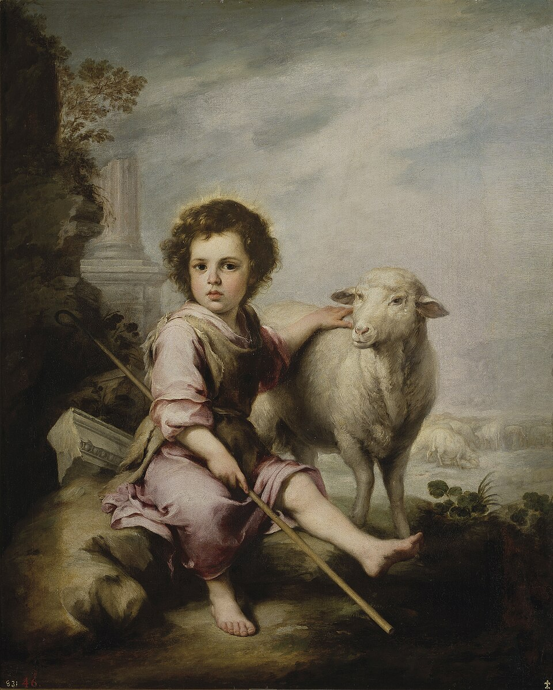
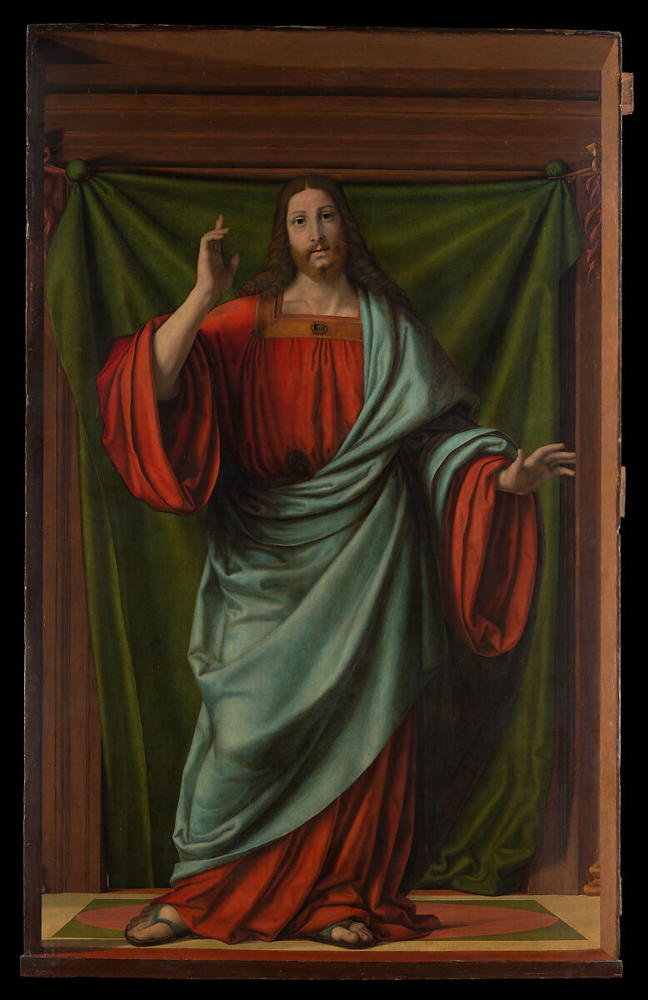
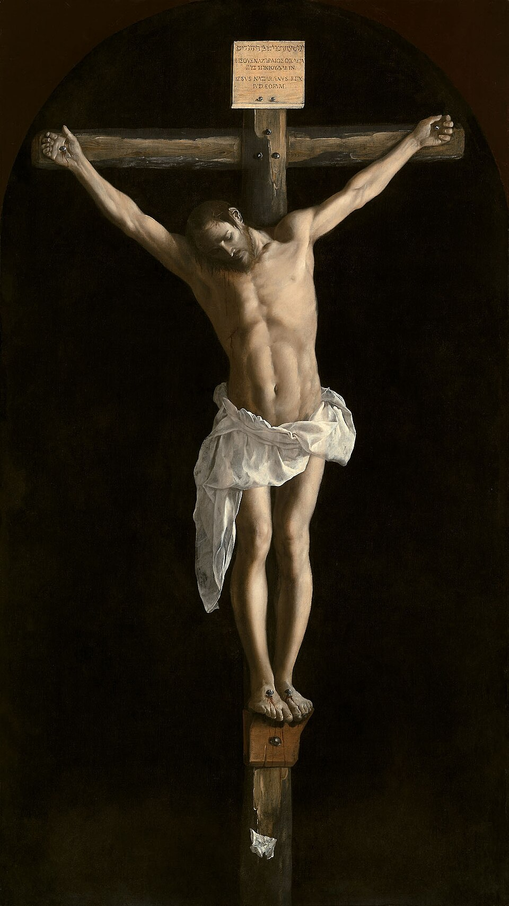
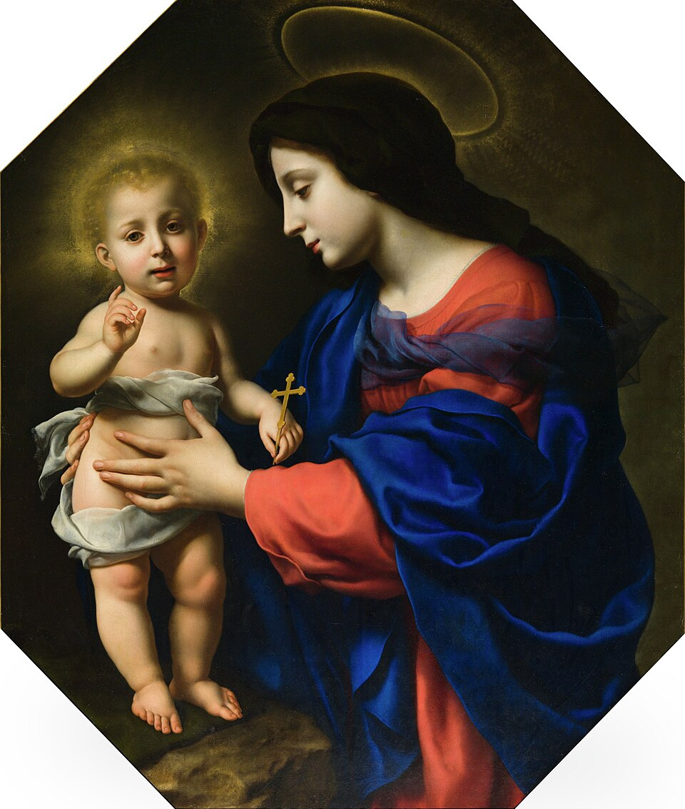
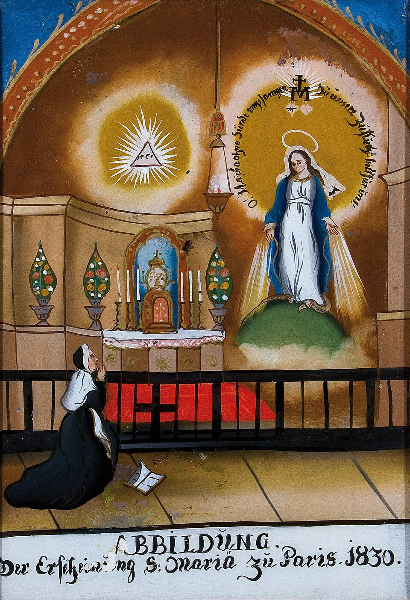
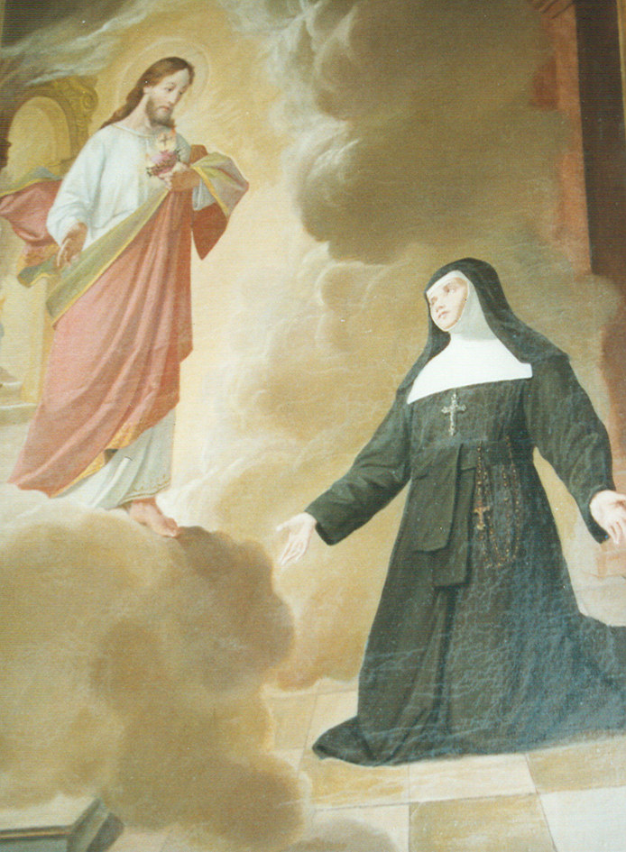
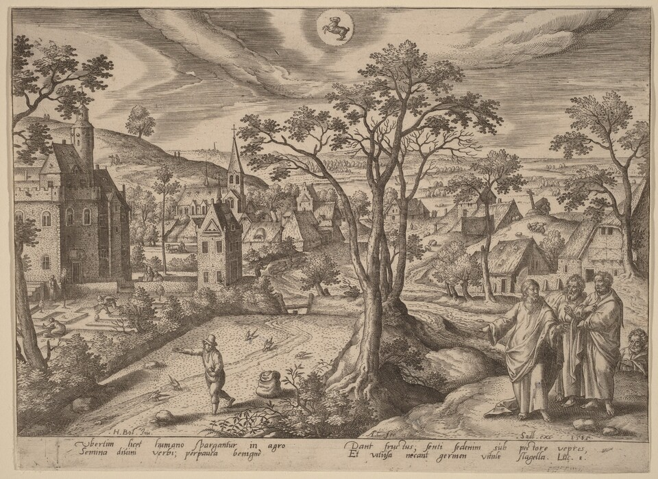
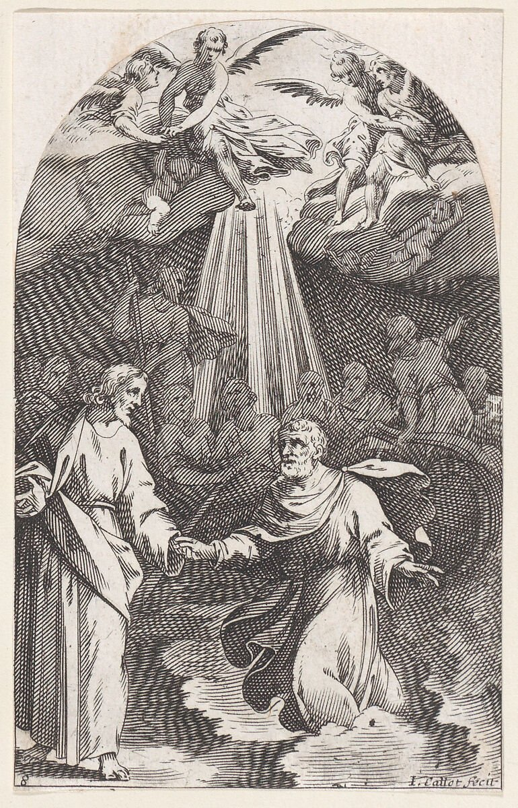
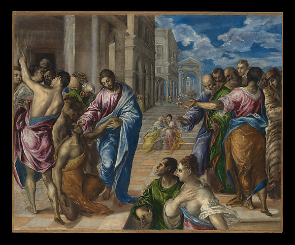
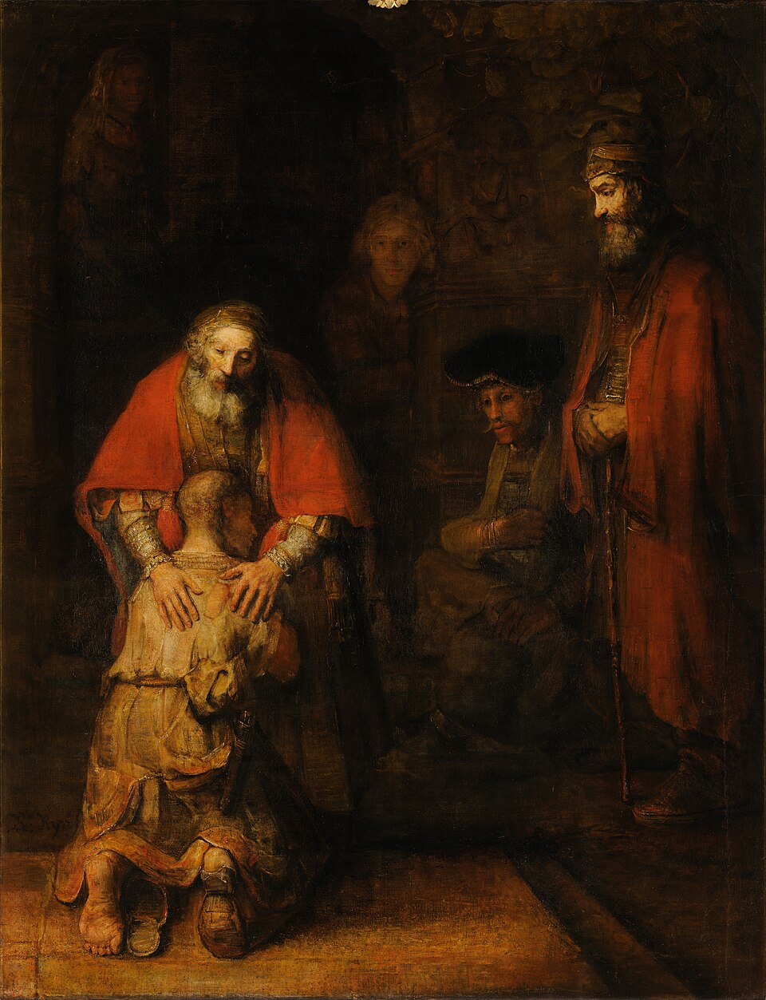

我爱你，超越一切限度
耶稣向你个人传达的无条件之爱的讯息
无论是死亡，是生活，是天使，是掌权者，是现存的或将来的事物，是有权能者，是崇高或深远的势力，或其他任何受造之物，都不能使我们与天主的爱相隔绝，即是与我们的主基督耶稣之内的爱相隔绝。 罗 8:38-39
这本小册子出自圣母司铎与平信徒运动，收录鲁道夫·艾哈德的默想文字：从耶稣基督的角度说出的简短话语，讲述祂对每一个人无条件的爱，并邀请我们在自己的生活中，为这份爱敞开大门。
目录
- 前言
- 引言
- 我对你的爱是无条件的
- 耶稣基督在你内生活
- 我的爱坚固你、帮助你、医治你、赐你力量
- 倾听你的内心，在你内发现我
- 借着我的十字架——我爱的烈火——我把你们赎回了
- 我邀请你，与我分享一切
- 你并不孤单，我的教会是你的团体
- 在我的教会中，你找到一切恩宠
- 我的任务——你们的任务
- 出于爱你：圣经，我对你说的话
- 与我分享你的苦难——在喜乐中
- 以我的眼睛去看：帮助，而不是恼怒
- 让我的爱进入
- 成为我教会、我福音的一块基石
- 体验施与和分享的喜乐
- 我在你内的力量，使你喜乐地服事
- 最崇高的善：你把自己献给我
- 出于爱你，我赦免了你
- 你的喜乐是我临在的确实证明
- 我的爱是你欢呼、赞美与感恩的动力
- 你们拒绝尊敬我的母亲，使我深感痛心
- 我的母亲玛利亚是通往我的最稳妥之路
- 我的权能是爱——强过一切骄傲
- 把你的心交给我
- 借着你的喜乐，我的爱与权能得以显明
- 以我的眼睛看
- 爱的话语结出果实
- 从我这里期待一切
- 把信任交给软弱的人？
- 信我，信任我，你的天主
- 失败与失望能坚固你的信德
- 只有我能真正使你幸福
- 你对我的爱的信仰，将改变你
- 我的爱永远寻找你
- 清除一切障碍——向我的爱敞开
- 完全自由——没有恐惧
- 只有无所畏惧的人，才能建立我的国度
- 我的爱是良善心谦的
- 你们有错误的天主形象——我的爱没有任何前提条件
- 接受我无条件的赦免
- 告诉所有人：我爱你，超越一切限度
前言
传扬福音，是耶稣降世的主要使命。「我也必须向别的城传报天主国的喜讯，因为我被派遣，正是为了这事。」（路 4:43）这讯息的核心是：天主是我们的父，祂爱我们。
把信仰传递下去，是耶稣托付给我们众人的使命。这并不是要发现新的启示，而是要重新看见启示，并让自己被它所触动。这份恩赐赐给了鲁道夫·艾哈德。多年来，他把自己完全交给天主，并与圣保禄一同不断地问：「主，我当作什么？」（宗 22:10）主耶稣起初在他内工作，然后借着他工作。这本你手中拿着的小书，便是其中的成果。当鲁道夫·艾哈德把这些文字交给我阅读时，我深受震动：其中的认识、其中的陈述，还有陈述的方式，都让我惊讶。主一下子向我说话了。祂鼓励了我，使我重新站起。正因如此，我鼓励这位弟兄，让这些文字能被许多人读到。因此，我欢喜地为此祈祷：耶稣这项基本的讯息「我爱你，超越一切限度」能唤醒许多人，并使人们能从天主那里听见这讯息。
赫尔曼·帕特本堂神父
引言
那是在神恩复兴运动的一次地区聚会上，我从来自巴塞尔的约翰内斯·茨瓦利纳口中听到这样一句话：
亲爱的朋友们，耶稣给你们每一个人最重要的讯息，就是这句话：『我爱你们，超越一切限度！』
我接受了这句话。我想，如果要把耶稣的讯息浓缩成一句话，那么它可以是这样：「我爱你，超越一切限度！」
在随后的时间里，我把这句话深深地放进心里，让它在我内发挥作用。这句话深深地触动了我，至今仍然触动着我。我想了很多，这句话对我个人究竟意味着什么。我把想到的写了下来。
鲁道夫·艾哈德
我对你的爱是无条件的
不要害怕！我，耶稣，是你的兄弟，我是全能的。我爱你，超越一切限度。
无论你做什么，我都爱你。无论你是来到我这里，还是从我身边逃开，我都爱你。无论你是回应我的爱，还是转身离开我，我都爱你。即使你与我为敌、憎恨我、迫害我，我仍然爱你。
你若犯罪，我就赦免你。你若独自一人，我就来到你身边。你若忧伤，我就安慰你。你若陷入困境，我就帮助你。你需要我，我就在你身旁。我爱你，就是你现在的样子。
我不批评你，也从不定你的罪。我的爱不向你索取任何东西，也不向你提出任何条件。
我不向你要求什么，也不命令你什么。我只是站在你面前，请求你允许我为你做这一切，为你成就这一切。我不催逼你，我有耐心。我等候着，直到你考虑清楚，直到你接受我的提议。只要你还没有这样做，我就会继续等候。
我只等待你的同意。我等待你的一句话。我等待你的「是」。

善牧与羔羊
人子来，是为寻找及拯救迷失了的人。 路 19:10

基督降福
耶稣基督在你内生活
我爱你，超越一切限度。若是有人对我们说这句话，会是怎样呢？也许是我们的父亲、母亲，或是我们的配偶？
如果这话是由一个在我们之上、我们依赖着的人说出来的，那又会怎样？但这样说话的，是天主——祂在耶稣基督内向我们显现，祂借着祂的圣神在我们内生活。这位天主，就像太阳：它把照耀的一切都镀上金色，温暖所触及的一切，治愈一切，使一切生长，所有的花朵都朝向它转动，没有它，生命便不可能存在。
我爱你，超越一切限度。这句话渗入我们之中，如同太阳的光线：温暖我们，承载我们，赐给我们生命与救恩。
我的爱坚固你、帮助你、医治你、赐你力量
我爱你，超越一切限度。接受这份爱吧，它就是你所需要的一切：你若饥饿，它要使你饱足；你若受苦，它要坚固你；你若生病，它要使你康复。
我的爱是一切问题的答案，是每一个时刻的同伴。我的爱是每一份软弱中的力量，是每一场危险中的庇护。你若让我的爱进入你的灵魂，你向我发问时，就会听见我的声音；你寻找我时，就能看见我。
你若让我的爱进入，你就会变得有力量，比所有不爱我的人都更有力量。你将不再惧怕，不再感到罪咎，不再忧伤。你若让我的爱进入，它就帮助你承受一切痛苦，无论多么剧烈；我就使你痊愈，无论你多么病重；我就使你喜乐，无论你多么忧伤。
所以你们不要为明天忧虑，因为明天有明天的忧虑！一天的苦足够一天受的了。 玛 6:34
倾听你的内心，在你内发现我
我爱你，超越一切限度。我爱你，我比任何人都更了解你，比你自己更了解你。没有人比我更了解你，没有人比我更有能力，没有人比我更爱你。我爱你，超越一切限度。接受它吧，接受我的爱。
如果你害怕明天，我的爱会除去你的恐惧。如果你不知道如何在一个艰难的问题上作决定，就想想我，想想我的爱，你就会知道。
请把你的爱献给我，在你的工作和忙碌中停一停！倾听你的内心，直到你听见我的声音！
天主竟这样爱了世界，甚至赐下了自己的独生子。 若 3:16

十字架上的基督
借着我的十字架——我爱的烈火——我把你们赎回了
我爱你，超越一切限度。当我在各各他的十字架上悬挂时，我也想到了你。
那时，我就已经洗净了你所有的罪过、你所有的罪债。我爱你，超越一切限度。我不愿你继续感到有罪，不愿你为自己的失败而折磨自己。我要从你身上除去这一切。我要使你获得自由，快乐而幸福。我如此爱你，把那压迫你的一切都交给我吧。我承担它，我为你背负它，因为我爱你。我爱你，超越一切限度。
如果你有一个十字架要背，我就使你的重担变得甘甜，你的负荷变得轻松。我的爱使你坚强，使你有力。我爱你，超越一切限度。
我的爱像火。我把它投向你，好使它点燃你。我慈爱的心也想点燃你的心，使它燃烧。我把我爱的这火赐给你，使你也成为这爱的火焰：一团发光、发热、点燃他人的火。

最后的晚餐
当耶稣与他们坐下吃饭的时候，就拿起饼来，祝福了，擘开，递给他们。他们的眼睛开了，这才认出耶稣来。 路 24:30-31
我邀请你，与我分享一切
我如此爱你，以至于我想与你分享一切。我拥有一切，一切都属于我，但我不想为自己保留任何东西。我想与你分享一切。
我的所有，就是你的。这是我炽热的愿望，因为我爱你，超越一切限度。我爱你，当你睡觉时我爱你，当你醒着时我也爱你。我替你挡住了多少灾祸！
我想替你挡住多少灾祸，却不能，因为你没有听从我的声音。你对我是多么宝贵！但我尊重你的自由。
我不强迫你，也不催逼你，即使我悲伤地看着你受苦，因为你不愿走我的道路。我爱你，超越一切限度。当你受苦时，我也受苦。我与所有人一同受苦。
我多么常常为你忧虑，盼望你能听见我的声音。我多么常常为你受苦，因为你离开了我的道路，走上了远离我的路。我不在的地方，就没有光，只有黑暗。我多么常常为你受苦，因为你更多地寻求黑暗，而不是光明。
你并不孤单，我的教会是你的团体
我爱你，超越一切限度。出于爱你，我为你赐下了兄弟姊妹。我不愿你孤单。我不愿你在爱我、跟随我的路上困难重重。因为我爱你，所以我建立了我的教会。
她是我所爱的新娘。她是我自己的身体。她是天国，是新耶路撒冷。她是山上的城；我奥秘身体上的每一个肢体，只要生活在我的爱中，就成为地上的盐、世上的光。
我爱你，超越一切限度。因此我建立了这个教会，也为了你：使你即使今生在地上，也有一个家。你不应独自一人。独自，你无法跟随我；独自，你无法有喜乐。但正如我在你内生活，我也在你的兄弟姊妹内生活。在他们内，你将遇见我。
因为我超越一切限度地爱你，我召叫你进入我的教会。只有在我的教会中，你才能体验到我全部的爱。唯有她，是我喜乐的所在，我圣善的所在，真理与爱的所在。
基督爱了教会，并为她舍弃了自己。 弗 5:25
在我的教会中，你找到一切恩宠
我爱你，超越一切限度。因此我想让你永远靠近我。我的教会是那个地方，我的门徒是你的兄弟姊妹。
我为你把我的教会装点得美丽。我用我多样的恩宠装饰了她，如同新娘戴上珍贵的首饰。我的教会不能与大教堂的宏伟、艺术品的珍贵混为一谈，也不能与管风琴乐声的美妙混为一谈；她更是我被钉十字架的爱的奥秘，这爱借着我的圣事，丰丰富富地向你们涌流。这就是我教会的本质：是你们对我的爱说出的无保留的「是」，是你们随时完全听候我的差遣，使你们成为这教会，成为我所挚爱的新娘。
我的任务——你们的任务
我爱你们，超越一切限度。因此我作为我身体的头，在你们中间生活，这身体就是教会。你们是我的教会，你们是我的身体。请向我祈求，使我医治我的身体，使我把失落的肢体重新接上，使我填补缺口。
你们无法把我与我的教会分开，她是我的身体。你们若毁坏我的身体，若离弃它，因它而绊倒，并走自己的道路，你们便是刺伤了我的心，那心是我教会的源头。我以我的血买下了我的教会。我的心属于你们每一个人。我曾应许，阴间的门决不能战胜她。但你们必须忠诚，并且顺从。
医治我的教会，只是我的任务，只是我的工作。你们的任务，是与我合而为一，你们彼此之间也要合而为一，即使这要使你们付出很大的代价。你们的任务，是为我的教会舍弃自己，正如我也为她舍弃了自己。我告诉你们，谁愿意像我一样为教会舍弃自己，谁也将与她一同复活。
当年我召叫伯多禄作我教会的牧人，因为他是那样爱我。你们也要在我的教会中，并为我的教会，以诚实的心，为了爱我而做一切。那么，我的圣神将保护你们，不致迷失方向。不要惧怕任何人，永远不要惧怕，因为我与你们同在！
翻开的圣经
出于爱你：圣经，我对你说的话
我爱你，超越一切限度。出于爱你，我早已让旧约的先知们把我的话记录下来。出于爱你，我借着我的圣神，让我的生平和父的讯息被记录，并保存至今。因为我爱你，我使我的话语得以保存。
出于爱你，也为了所有的人，我使我的话语总是可以接触到：在书中之书里。它是所有书中流传最广的，每个人都负担得起购买它。
出于爱你，我一次又一次地赐给你时间来读这本书。我的爱催促我，从这本书中对你说话。当你把我为你预留的时间，用在别的事情上——常常是那些把你远远带离我的事情上——我多么忧伤。
我爱你，超越一切限度。因此，我早已宽恕了你。我会等待，直到你给我机会，向你说话。
与我分享你的苦难——在喜乐中
我爱你，超越一切限度。因此我把我的律法写在你的心上。你难道没有发现，当你让我的爱进入时，你与从前有多么不同吗？从前，若有人对你不公，这曾多么伤害你，现在你却能平静地接受它。是的，我甚至教导你，想到我遭受了那么多的不公，便因此而喜乐。我教导你，为能与我分担这份痛苦而喜乐。
因为我爱你，我使每一份重担对你来说都变轻了，因为我使你从你自己欲望的重担中得到释放，得到救赎。因为我爱你，我教导你为了爱，把自己、你的欲望、你的舒适都出于爱而献出。
以我的眼睛去看：帮助，而不是恼怒
求祢开明我的眼睛，透视祢法律的奇能。 咏 119:17
我爱你，超越一切限度。因此我也为你开启了双眼。过去那些在别人身上使你恼怒的事情，尤其是在我的教会中的事情，如今你以我的眼睛、以爱的眼睛去看。你不仅看见失败与软弱，你也看见了其背后的需要。对你来说，不再有令你恼怒的事，而是有了去帮助、去安慰、去陪伴的动力，甚至亲自去做那工作，正如我所做的一样。因为我爱你，你能够做到。
让我的爱进入
我爱你，超越一切限度。因此我承担了你的抑郁、你的一切苦难、你的疾病与残障。我确实把全世界的苦难扛在我的肩上，为拯救所有人，也包括你。我不要苦难，我不要贫困，我不要疾病。这一切都是世上所犯的许多罪的后果，是违背我诫命与指示的后果，主要是缺乏爱所造成的后果。因此我无法阻止它们。但因为我爱你，只要你让我的爱进入，我就使你的一切重担对你来说都变轻了。若你一切都从我这里期待，你也将从我这里得到一切。
但你也要与我一同忍耐，正如我与你同样忍耐，因为只有我才永远知道正确的时刻。

基督背负十字架
你们也就成了活石，建成一座属神的殿宇。 伯前 2:5
成为我教会、我福音的一块基石
我爱你，超越一切限度。因为我爱你，我向你张开双臂。今天我就在等候你，要在你跨过永生门槛的那一天，把你拥入我的怀抱。
不要惧怕，要想起藏在田里的宝藏，想起那颗宝贵的珍珠，我曾向我的门徒讲过这些。当你让我的爱进入时，你也会欢喜地舍弃一切，或轻看它们，为了你因我的爱而领受的那些宝藏。
因为我超越一切限度地爱你，我要现在就把这些宝藏指给你看，让你在仍身处世上时就尝到它们。因为我愿意现在就把天国赐给你，所以我呼召你：要尽你全部的力量，帮助我建造我破碎的身体、我病弱而分裂的教会。
我需要你。你是一块活的基石。我需要你，好使我的福音在你身上活起来。我许多可怜的人徒然地渴望着它。
体验施与和分享的喜乐
因为我超越一切限度地爱你，所以我教导你施与和分享的喜乐。我这贫穷的世界对这喜乐知道得太少，因为它说的是完全相反的语言。出于爱，我向你展示了：爱的喜乐、施与的喜乐，今天就能尝到，是多么美好。
你还记得你生命中最美好的时刻吗？那时你非常快乐，非常幸福。那不是你自己接受恩惠的时候，而是你在一个人身上帮助了我，帮助了我本人。当我眼睛看不见，站在路边不敢过马路时，你握住我的手，带我安全地穿过车流，那是多么幸福的时刻啊！你还记得吗？你骑着自行车，在拥挤的车流中，友好地挥手，让我先行，那时的情景呢？你能忘记我眼中感激的光芒吗？还有，当我还是个小男孩，从家里跑出来，在车流旁的路边冻得发抖地站着，是你把我送回了家。还有那时，你抱着我——那时我还没有自己的双脚——帮助我在夜里安全地回到家！你还记得你当时有多快乐吗？这是我对你的伟大之爱，它使你领受了这幸福，这田里的宝藏。
为此我流出了我的心头之血，为此我成为了活水的泉源，使我对你的爱之河永不干涸。因为我超越一切限度地爱你，我邀请你：来吧，从这爱中随你所愿地取用；我邀请你：来吧，喝吧，直到你饱足！
饥渴慕义的人是有福的，因为他们要得饱饫。 玛 5:6
凡你们对我这些最小兄弟中的一个所做的，就是对我做的。 玛 25:40
我在你内的力量，使你喜乐地服事
我爱你，超越一切限度。因此我如此丰盛地赐福于你。我从你心中除去了想在世上被人看重的野心，为此我向你展示了服事的喜乐。我从你心中除去了不耐烦，并教导你要有耐心，对每一个人都要有耐心，正如我对你有耐心一样。
否则，若我对你不耐烦，你早就失败了吧？因为我爱你，我赐给你我的力量，你知道它是无限强大的。它使这世上的一切成长、生长、发生。我的力量使你接纳你不喜欢的人。
我的力量消除你的一切忧伤、一切痛苦，只要你从我手中感恩地接受，它就教你将它们遗忘。我的力量使你对所有人都更愿意往好处想，而不是往坏处想；使你更愿意赞美他们，而不是责备他们。我的力量使你能够发自真诚的心，宽恕那些伤害过你的人，无论他们对你做了什么。
最崇高的善：你把自己献给我
我如此爱你，超越一切限度，我要你分享我的喜乐，分享我的光明，分享我的荣耀。但若这一切一下子临到你身上，你是承受不了的。
你必须学习很多，好使你能承受我为你所承受的一切：苦难与喜乐。你必须两者都学会。最重要的是，你必须接受我的救赎，因为只有当你真心愿意得救赎时，我才能将它赐给你。对救赎说「是」，也对我托付给你的每日十字架说「是」，就是补满我的苦难中所欠缺的。这就是我的肢体，在爱中参与救赎的工作。
因为我如此深爱你，超越一切限度，我也为你预备了最崇高的善，那意味着最高的喜乐、最高的福乐。那就是你完全地把自己献出来，自愿地献给我，你的爱人。没有更大的福乐，没有更光明的光，没有更大的爱，能比得上把自己连同所拥有、所持有、所愿望的一切都献出去。我在各各他为你这样做了，那时我出于爱你，自愿把自己交到我的迫害者手中。那时我就已经把自己完全地赠予了你，此后也从未停止这样做。这正是我生命与受难的目的。这就是我的救赎的内容，我从那时起日日夜夜向你提供的救赎：从自我的枷锁中，从你的欲望与成见的枷锁中得到释放——这些正是许多痛苦的根源——得到施与的自由，赠予的自由，自我赠予的福乐，与所爱之人的结合。这位所爱的人，不停地向你说：我爱你，超越一切限度。
人若为自己的朋友舍掉性命，再没有比这更大的爱情了。 若 15:14
出于爱你，我赦免了你
因为我爱你，我也彻底地认识你，比你自己更了解你。因此我请求你，停止一切对自己的纠缠与思虑。有不懂的事，就问我。因为我爱你，我请求你，不要背负任何重担、任何罪咎感、任何忧伤。这一切你都应交给我。我以我无限的力量承担它，我把一切苦难都转化为喜乐。我在十字架上流出最后一滴血，也已洗清了世上最后的罪债：所有的罪，包括过去、现在和未来最后的罪。
我出于爱而赦免了你。每当你怀疑、迟疑、拒绝从我手中接受这赦免时，我是多么忧伤啊！
你的喜乐是我临在的确实证明
我爱你，超越一切限度。因此，我最渴望的，就是你快乐，就是你欢笑、喜悦。我的教会，我那极其所爱的新娘，应当是一个充满喜乐之人的团体。你们若真想与我合而为一，就必须快乐，因为每一次相遇，每一次与我——那极其所爱者——在一起的时刻，都是你们全部的喜乐。若你在我内不喜乐，你就夺去了你周围的人、世界最后的希望。若你们，我亲爱的兄弟姊妹，你们这圣徒的团体，不是一个喜乐与欢欣的团体，你们就无法传递我的讯息。忧伤、绝望、疲倦、缺乏幽默、阴沉的严厉，对我都是一种冒犯，我是那用我的爱把一切都赐给你们的。这样，你们就无法传递我的讯息。这样，你们就把它颠倒成了它的反面。
你们该赞美天主，感谢祂，显扬祂！该在众人前把祂为你们所做的一切好事归功于祂。 多 12:6
我的爱是你欢呼、赞美与感恩的动力
因为我全心全意地爱你，我使你的心充满喜乐。你难道没有感觉到，这种情况越来越多地发生吗？即使忧虑、恐惧想要把你囚禁，你难道没有感觉到，你的灵魂每一次转向我，都立即战胜这些试探吗？出于爱，我使你的心充满喜乐，喜乐到它越来越多地催促你欢呼、赞美，并为我的爱而感恩。
因为我爱你，我赐给了你赞美的、不可战胜的力量。我向你显示，你生命中没有任何一分钟，是你不应全心为我感谢、不应赞美我的。不要为苦难和罪而赞美我，而要为我的临在、我的爱、我的天意、我为你的生命所定的计划而赞美我。你可以为我的力量、我的爱而赞美我：我的爱是你生命中每一种处境、每一分钟的主。是的，我是你生命中每一种处境的主，无论它多么忧伤、多么晦暗、多么没有希望。我就是主。因此，我已从你身上除去了一切惧怕与恐惧，也包括对未来的惧怕。不要害怕！对任何事、任何人都不要惧怕，我就是主！

镶框的圣母子圣像
你们拒绝尊敬我的母亲，使我深感痛心
我爱你，超越一切限度。因此，我也把我的母亲赐给你。玛利亚是你的母亲。她爱你，如同她爱我，并且一直如此爱我。我所爱的母亲，就是你所爱的母亲。她是最纯洁、最高贵、最美丽、最可爱的女人，她的脚曾踏上这个地球。因为我超越一切限度地爱你，所以我愿意她也爱你，你也爱她。
你能想象吗？当人们不愿爱与尊敬我所爱的母亲，尽管我出于对他们纯粹的爱，把她赐给了他们作母亲，这让我多么伤心？你能想象吗？当人们拒绝对我的母亲施以爱、尊重与敬崇，因为他们以为这样做会减损应当归于我的爱、敬崇与敬拜，这让我多么痛苦？
地上没有一个人比我的母亲更爱过我。没有人比她更遵行我的旨意，没有人比我的母亲更纯洁、更谦卑。因此你们应当爱我的母亲，因为她是那么深爱我。因此我使她成为我教会的母亲，因此我使她成为天地之后。因此我把向我这贫穷世界所传的讯息托付给了她，因此我使她成为你们的领导者。
通往我的道路，没有比经过我的母亲更稳妥的了。拒绝我的母亲的人，若是这样深深伤害我，他怎能说他真正爱我呢？

玛利亚伸出双手
我的母亲玛利亚是通往我的最稳妥之路
我爱你，超越一切限度。因此我把我的母亲赐给你。她是最慈爱、最纯洁、最美丽的女人，她向你——她的孩子——伸出双手。她带领你安全地穿过最黑暗的夜，安全地走过每一个危险。请把你自己托付给她！
我的权能是爱——强过一切骄傲
我爱你，超越一切限度。因此我一再说：不要惧怕！不要惧怕与别人不同。不要惧怕与你周围的人不同，与你家中的人不同，与你邻里、你工作场所的人不同。我呼召你与我同在，与我——你的主和君王，与我——全能者——同在。但我的权能与世界的权能不同。它是不可见的，它是渺小而不显眼的，它常常在人看来像是软弱。然而，我的权能是一切时代最强大的权能与力量。我的权能就是我对你和对所有人无限的爱。没有人比我所钟爱的宗徒保禄，用更美的言语描述过这权能：「爱凡事相信，爱不求己益，爱凡事忍耐，爱凡事包容，爱永存不朽……」
这股强大的力量，我用来对抗敌人的毁灭之力。一方是骄傲，那是我的对手放在你们心中的；另一方是我的爱。两者都是强大的力量，但只有爱是不可战胜的。每一份真爱都是我的爱。它比任何骄傲都强大，比任何仇恨都强大。
爱是含忍的，爱是慈祥的，
爱不嫉妒，不夸张，不自大，
不作无礼的事，不求己益，
不动怒，不图谋恶事，
不以不义为乐，却与真理同乐；
凡事包容，凡事相信，凡事盼望，
凡事忍耐。爱永存不朽。 格前 13:4-8

基督向圣玛加利大·玛利亚·亚拉高显示祂的圣心
把你的心交给我
出于爱你，我不断地请求你：把你的心交给我！把你全部的心交给我，你心中的每一个角落，好让我把它充满我的爱，直到满溢！只有当你的心被我的爱充满到满溢时，骄傲才没有地方在你内安家。不是你的理智，不是你的意志，不是你的知识，能够战胜你的骄傲，只有我的爱才能。常常，一天早上遇到的第一个人，若没有像你所希望的那样亲切地对你说「早安」，就会使你陷入诱惑。若这使你受伤，那么你就知道，你仍然在心中为骄傲留了一个位置。
因为我如此无限地爱你，我想使你对我的声音越来越敏感。但你必须小心地注意我。凡是在一天之中让你不舒服的事、伤害你的事，无论多么微小，凡是可能在你内唤起恐惧的事，都是一个明确的记号：你还没有允许我用我的爱完全充满你的心。即使你悲伤、沮丧，即使你生气，即使在你内对什么事、对什么人，哪怕是最轻微的攻击性冒出来，那时就听我的声音。正是在那时，我向你呼喊：不要害怕，我爱你，超越一切限度！
借着你的喜乐，我的爱与权能得以显明
因为我如此爱你，我要你快乐，要你的眼睛发光，要你的心为我欢欣。我要你的整个存在都成为喜乐。你要成为发光的光，让所有人都能看见。
喜乐、欢欣、笑声，都是我临在于你内的确实记号。在每一天的每一种处境中，都要让自己沉浸于这喜乐。在其中，我无限的爱与我的权能将向你显明。苦难在这个世界上会始终存在，作为罪的后果。但你要记住，我的十字架，那耻辱的记号、失败的记号，成为了全世界的胜利标记。
同样，我的爱把临到你身上的每一种苦难，转化为对我的喜乐，以及对我临在的喜乐——当你正在这样的时刻，毫无保留、毫无疑虑、毫不迟疑地，把你自己连同你的苦难献给我时。因为我爱你，因为我急切地想把我丰盛的恩赐赐给你，我期待你在苦难中完全地、彻底地信赖我。
以我的眼睛看
我爱你，超越一切限度。因为我爱你，我教导你以我的眼睛去看。
没有我的眼睛，你是盲目的。没有我的眼睛，你只看见发生了什么、正在发生什么，但看不见「为什么」。只有以我的眼睛，你才看见真实所是。你看见爱，你看见恨，你看见苦难、孤独、绝望，你看见恐惧。这一切都隐藏在事物背后，隐藏在言语与行为背后。只有当你看见我如何看，你才能像我会行动那样行动。凭你自己的冲动、自己的意愿，你是做不到的。

撒种的比喻
爱的话语结出果实
我爱你，超越一切限度。因此我欢喜，你越来越多地让我的爱进入你内。这使你能够出于爱而行动。当爱，我的爱，成为你行动的唯一动力，你就会做大事。而且，你自己也会越来越快乐，越来越无所畏惧，越来越平静。
凡出于爱所做的一切都会留存。每一句出于爱而说出的话，都会触动别人的心。它就像一颗播下的种子，发芽，结出果实。但人最优美、最聪明的言语，若没有爱，便落到地上，变得毫无用处，即使说话的人在人们眼中站得再高也是如此。
从我这里期待一切
我无限地爱你。因此我赐给你对我的大信赖，一个坚强的信德。你难道没有感觉到，它越来越多地承载着你吗？你难道没有感觉到，它使你对每一个人、在每一种处境中都越来越安稳、越来越无所畏惧吗？
尽管如此，你的信德仍然比芥菜种还小。我曾对我的门徒谈到这芥菜种，它就足以吩咐那座山说：「起来，投到海中！」
因为我爱你，你应当不断地求我，坚固你对我的信德。我要你从我这里期待一切。
把信任交给软弱的人？
你难道看不见，你周围的大多数人是多么无助吗？你难道看不见，那些在你们中间掌权、本应引导你们的人，是多么无助、多么畏惧吗？
那些本应走在前头、带领你们克服你们这个时代前所未有地堆积起来的巨大问题的人，是多么胆怯！他们不相信我。我对此感到惊讶，因为他们却愿意相信其他软弱之人的种种承诺。我惊讶的是，你们中间有许多人是多么轻信，追随最荒谬的口号，相信那些每天都证明自己几乎毫无能力、也不愿勇敢地为真理、公理与正义挺身而出的人，所作的最荒谬的承诺！
我惊讶的是，那些在你们中间掌权的人，仍然相信别人会信任他们。我惊讶，因为他们自己不断地经历到，自己是多么无能为力，多么软弱、胆怯，只要哪怕有一点点的阻力出现。
信我，信任我，你的天主
我如此无限地爱你，同样地，我也爱所有的人。为什么几乎所有人都宁愿相信另一个软弱的人，也不愿先信任我？试着找出一个人，我在他一生中从未弃他于不顾，也从未令他失望，如果他愿意毫无疑虑、毫无保留地把自己托付给我的爱。你找不到任何人。然而人们仍然不相信我。现在你也能体会，我是多么爱你，因为你相信我，因为你信赖我。

基督托住伯多禄于水上
在爱德上根深蒂固，奠定基础，为使你们能够同众圣徒领悟基督的爱是怎样的广、宽、高、深，并知道基督的爱是远超人所能知的。 弗 3:17
失败与失望能坚固你的信德
出于爱你，我常常没有满足你的愿望。我很高兴，你在每一件事上都看出，这是出于爱。你还记得吗？在你皈依之后的最初那股巨大热情中，你原本想为我做多少事？
你后来花了很长时间才明白我。因为我爱你，我必须先赐给你这个经验。因为我爱你，我必须借着失败与失望，让你的信德生出更深的根，使你对我的爱成倍增长。
若我没有这样做，你就会失败，现在也就无法为我与我的国度有所作为。你会使你自己和我都蒙羞，而我的仇敌就会欢喜。出于爱你，我阻止了这一切。出于爱，我要让你越来越深地进入我的本性。这离不开辛劳与顺从。
天主，求祢保佑我，因为我只投靠祢。我对天主说：『唯有祢是我的上主，唯有祢是我的幸福。』 咏 16:1-2
只有我能真正使你幸福
你是否感觉到，我多么充满爱意地看着你？你是否感觉到，我如何把我保护的双臂伸展在你身上？你是否感觉到我的心跳，每当你回应我对你的爱，它就跳得更快？你是否感觉到，那时周围的一切突然变得多么明亮？难道不是我，才真正使你幸福吗？
你对我的爱的信仰，将改变你
我爱你，超越一切限度。因此我教导你越来越多地以我的眼睛看。你越是以我的眼睛去看，就越快认出自己的过错。你会认出那些你平常很少注意到的过错。但你的过错，会使别人为你而恼怒，会使别人不那样爱你、不那样接纳你，不像你期待他们那样对待你。你越是学会以我的眼睛去看，就越会看见：你在别人身上所恼怒的许多事，你自己也在做。也许你不常做，但时不时地做。当你学会以我的眼睛看自己，你就会越来越好地认识自己。那时，你能够改变，也将会改变。周围的人也会注意到，并感到惊讶。他们会欢喜。他们会比从前更爱你。
你现在是否看见，我对你的爱有多大？你是否看见，它能在你内和他人内唤醒多少爱？我的爱是最强大的力量。即使几乎没有人相信或注意到它，它所成就的，仍然比世上一切其他力量加在一起所能成就的，要多上千倍。
因此，我一再请求你，让我的爱进入你内。接受它！接受我！不要向我索取太少！接受我想赐给你的一切！接受我向你提供的一切！
我在等待，因为我爱你，超越一切限度。

基督治愈盲人
洪流不能熄灭爱情，江河不能将它冲去，如有人献出全副家产想购买爱情，必受人轻视。 歌 8:8
我的爱永远寻找你
我爱你，超越一切限度。你相信我这句话吗？若你能相信，你的心就会因喜乐而几乎要爆裂。那么，这喜乐就会催促你把它说出去。你就会把我的福音带到世界各地。你相信我比所有其他人爱你更多吗？
每个爱你的人，即使是最亲近你的人，都会在你心中留下疑虑。即使你们彼此相爱得再深，是否仍有某人不断在你心中留下未被满足的愿望？你难道不是一再地，连你最亲近的人也让你失望吗？你难道不是一再地感到痛楚，因为他终究无法完全理解你？你难道不是感到痛楚，因为正当你最需要他的时候，他没有时间给你，或无法百分之百地转向你？只有在我这里，情形不同。我的爱是全能的。
我的爱无所不在，我的爱没有界限。它永远都在。它永远专注于你。它从不休息。
我的爱寻找你，寻找你的幸福，你的福乐，你的喜乐，你的平安。
清除一切障碍——向我的爱敞开
若你相信我说的这一切，你就必须越来越努力地清除一切障碍，那些你有意或无意地不断建立起来的障碍，使我的爱常常无法穿透，到达你身边。
一个障碍是，你常常没有时间给我，其他的约会挡在你我之间。对我来说，一个很大的障碍是，你常常把其他一切看得比片刻停下来、倾听我的声音更重要，而这往往只需要短短几分钟。
另一个对我的爱很大的障碍，是你的恐惧。你一再为我的爱树立起这道障碍。它是这样的恐惧：例如害怕向别人坦然显露你怎么想、怎么感受，害怕被误解，害怕出丑；害怕被视为讨厌的人，或害怕欠了别人什么。可惜，你能找到的恐惧的理由，往往太多了。
完全自由——没有恐惧
我不是一再地对你说：不要害怕！若你相信我，若你允许我超越一切限度地爱你，若你允许我用这爱充满你的心、你的整个存在，那么恐惧就再也没有容身之地了。
若你允许我这样做，你就会摆脱恐惧，真正地自由，完全地自由！我亲爱的孩子，你难道不相信，我爱你的目的，就是要使你最终彻底自由，摆脱一切恐惧吗？
只有无所畏惧的人，才能建立我的国度
只有那些摆脱了恐惧的人，那些终于从我这里接受这份自由的人，才能建立我的国，建造我教会的身体，把我的救恩带给世界。正是我爱的烈火，我圣神的狂风，在五旬节上使我那些惊慌的门徒彻底摆脱了恐惧。这多么彻底地改变了他们！他们立刻显出了多么大的力量！你想一想，这份自由对你而言意味着多么巨大的力量。你想一想，从我教会的最初几天直到今天，那些得到解放的人们，为此承受了一切。成千上万的人欢欣地承受了酷刑与死亡。我这些历代的圣人，他们至今仍然活着，并受到整个教会的敬崇。
就像迫害他们的人的权势早已过去，世上所有其他压迫者的权势与暴力也必将过去，无论他们在东方，还是在西方。他们的武器也必将生锈。
我的爱是良善心谦的
我爱你，超越一切限度。因为我爱你，所以我从不需要暴力，因此我不强迫任何人，因此我不威胁任何人，也不使任何人对我心生恐惧。我自己教会里的仆人，在漫长的时代里试图对人施加压力，这是一个极大的罪。我因此所受的痛苦，比我为你和全人类在十字架上所忍受的痛苦还要更大。直到今天，我仍然在受苦，因为我必须亲眼看见，人们以我的名义压迫、恐吓，甚至折磨、消灭他人。你能理解，我为此受了多少苦，直到今天还在受苦，当这样的事仍在发生吗？我在受苦，因为我是良善心谦的。我在受苦，因为我对每一份加在我身上的暴力，都毫无抵抗地承受了。
我从未抵抗过，我从未使用过暴力。唯有我的爱，战胜了一切暴力。
所以你们也应当这样做！只能这样，别无他法！因为爱排斥任何暴力，无论以什么理由施行。
你们有错误的天主形象——我的爱没有任何前提条件
我爱你，超越一切限度。因此，我以多种方式向你显示，我真正是谁。因此，我向你显示了，那使我深感痛苦的是：大多数人对我有完全错误的形象。即使在我的教会中，这错误的形象也存在，这使我最为痛心。我是如此不同。人们以为，他们必须或能够自己做些什么来影响我，这并不正确。人们以为，他们必须借着某些行为来影响我，以便买到我的爱，甚至买到他们罪的赦免，这也不正确。我是收买不了的。你们怎会以为，我对你们的爱可以用善行、奉献、祈祷的长久，就能买到呢？这一切，若是以正确的精神而行，都会使我的心非常喜悦。但我的爱与你们罪过的赦免，与这一切是完全无关的。你是否感觉到，这种想法必然冒犯我，你的天主——我就是爱本身？我不仅超越一切限度地爱你和所有人，并且没有任何前提条件。我赦免你们一切的罪过与所有的罪，因为我早已赦免了你们。你们只需承认你们的罪，请求并接受我的赦免。

慈爱的父亲拥抱归来的儿子
接受我无条件的赦免
至少，你相信我的宝血真正地、彻底地洗净了一切罪债吗？你们人，用你们的一切行为，永远无法使我——你们的天主——偏向爱你们，赦免你们。这是错误，这是迷信，这是偶像崇拜！我先爱了你们，我总是先爱你们。我也总是先赦免你们，出于我自由的意志，出于我对你们无法言喻的爱。只有一种罪，是我无能为力的：那就是持续地拒绝接受我的爱、我的赦免，拒绝让自己被我赦免。
他便起身到他父亲那里去了。
他离的还远的时候，他父亲就看见了他，动了怜悯的心，
跑上前去，扑到他的脖子上，热情地亲吻他。 路 15:20
告诉所有人：我爱你，超越一切限度
因为我超越一切限度地爱你，我把这讯息写进了你的心。你感觉到其中的差别吗？你感觉到，你们中间有这么多人仍不愿相信我，这让我多么伤心吗？你感觉到，在这些怀疑者中，也有许多是我所钟爱的儿子——是我安置在你们中间作我代表的人——这让我多么痛苦吗？他们中也有许多人，仍然拒绝我的爱、我无条件的赦免。
因为我超越一切限度地爱你和所有人，所以我请求你，把这讯息传出去！不要迟疑！不要惧怕！世上没有比这更重要的事要做了。
告诉所有人，无论大小，无论高低，无论远近：我爱你，超越一切限度。
所以你们要去使万民成为门徒……看！我同你们天天在一起，直到今世的终结。 玛 28:19-20
你别说：我太年轻，因为我派你到那里去，
你就应到那里去；我命你说什么，你就应说什么。
你不要害怕他们，因为有我与你同在，保护你。 耶 1:7